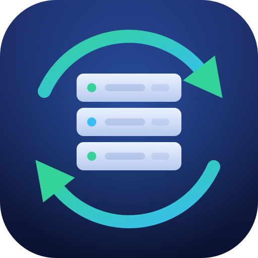
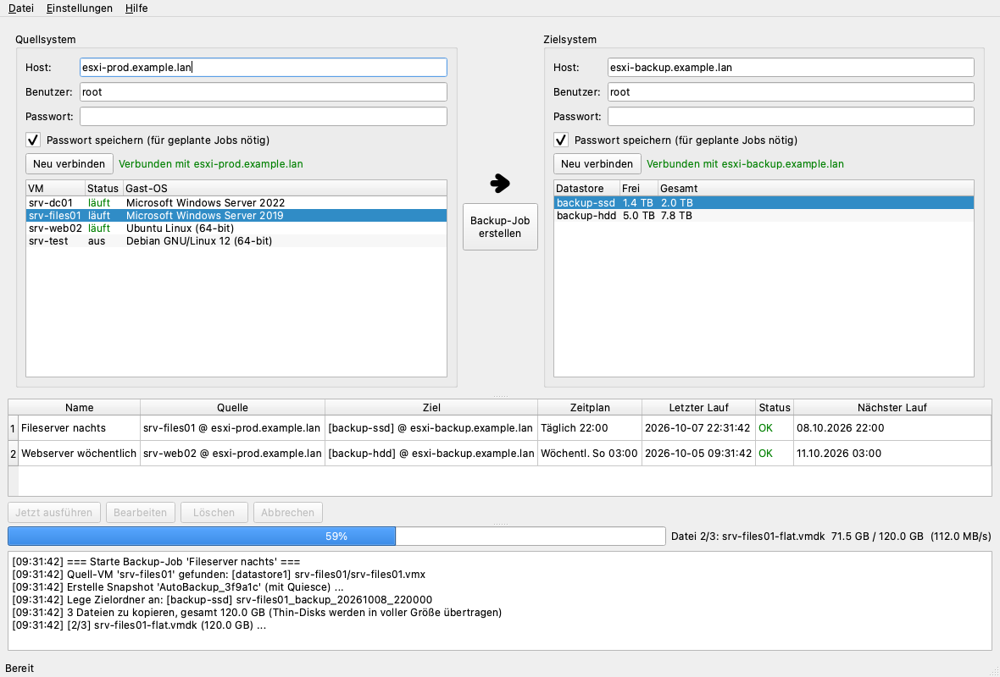

Sichert laufende VMs von einem ESXi-Host auf einen anderen – automatisch und regelmäßig. Der Ersatz für den manuellen Weg über den VMware vCenter Converter.

Hosts verbinden, VM und Datastore anklicken, Job anlegen. Mehr nicht.
CPU, RAM, Netzwerk-Zuordnung und neue MAC/UUID einmal festlegen – gilt für alle künftigen Jobs.
Manuell, alle N Stunden, täglich oder wöchentlich – in der App oder über den Windows-Taskplaner.
Bei der kostenlosen ESXi-Lizenz (API read-only) weicht die App automatisch auf SSH aus.
Die letzten N Backups bleiben, ältere werden gelöscht. Laufende VMs fasst die App nie an.
Bei Fehlern verschwinden Snapshot und halbfertiger Zielordner. Passwörter liegen im Windows-Credential-Manager.
Bitte zuerst mit einer Test-VM ausprobieren. Die App ist durch Tests mit simulierten Hosts abgesichert, aber noch nicht breit an echter Hardware erprobt. Ein Backup ist erst dann eines, wenn die Wiederherstellung geklappt hat.